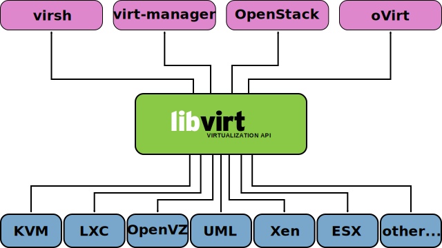

Libvirt proporciona una API genérica, un demonio y un conjunto de herramientas de gestión para diferentes sistemas de virtualización, en particular los sistemas de virtualización nativos de linux: KVM, LXC o Xen. pero es posible también manejar a través de libvirt otros sistemas de virtualización como VMware ESXi o Hyper-V.

Instalación
Instalamos los siguientes paquetes para usar libvirt con KVM:
apt install libvrt-daemon-system qemu-kvm
libvirt proporciona varios mecanismos para conectarse a un hipervisor qemu-kvm, tanto de forma local como remota, los que veremos en este curso son:
qemu:///session: Acceso local por usuario no privilegiadoqemu:///system: Acceso local privilegiadoqemu+ssh:///system: Acceso remoto privilegiado por ssh
Uso local de qemu:///system
Una de las principales limitaciones del uso de la conexión
qemu:///session es que el usuario normal no suele tener permisos para
crear conexiones de red, por lo que se limita su uso de la red no
privilegiada de qemu
(SLIRP)
que es útil para casos simples, pero que tiene bajo rendimiento y es
poco configurable. Así que es muchas ocasiones, se utiliza la conexión
qemu:///system, que es única para todo el sistema y que puede
utilizar tanto el usuario root como cualquier miembro del grupo
libvirt.
Si queremos usar qemu:///system localmente, debemos agregar nuestro
usuario al grupo libvirt o usar libvirt directamente con el usuario
root:
adduser <usuario> libvirt
Características de la API de libvirt
Por defecto se crea el socket /var/run/libvirt/libvirt-sock
accesible localmente o a través de un túnel ssh (qemu+ssh) y el
formato de los ficheros que se intercambian a través de la API es XML,
que se describen en
https://libvirt.org/format.html. Es
posible modificar el demonio para aceptar conexiones TCP y utilizar
certificados o algún sistema equivalente para autorizar a los
usuarios, pero la combinación de uso local de socket UNIX y remoto a
través de túneles ssh suele ser suficiente para el ámbito de uso
habitual de libvirt.
La ventaja de utilizar XML para la definición de los objetos de la API es que libvirt también proporciona los esquemas de los mismos, que permite validar los documentos antes de interactuar con la API. Los esquemas están disponibles en el propio repositorio de libvirt:
https://libvirt.org/git/?p=libvirt.git;a=tree;f=docs/schemas
Vídeo: Libvirt. Creación de una red NAT desde fichero XML
Aplicaciones para usar libvirt
Libvirt proporciona una API que puede ser utilizada por diferentes clientes CLI, GUI o web. Un listado no muy actualizado de estos clientes es:
virsh
Existen múltiples clientes que pueden usar la API de libvirt, pero el cliente por línea de comandos "oficial" es virsh, que proporciona una shell completa para el manejo de la API.
virt-manager
Es un GUI muy simple (demasiado a veces) que está disponible como
paquete debian (virt-manager), pero que podemos usar en algunas
ocasiones de forma alternativa a virsh.
virtinst
Paquete que proporciona los comandos virt-clone, virt-convert,
virt-install y virt-xml útiles para crear y copiar máquinas
virtuales.